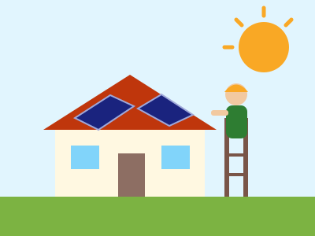
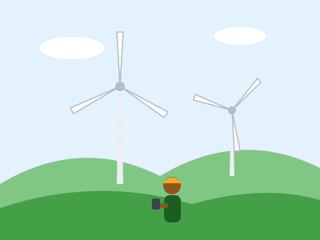
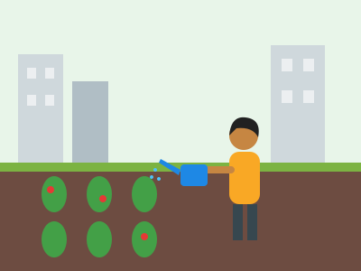

Sobre as imagens
Todas as ilustrações desta galeria foram feitas pela equipe EcoVocação em SVG, um formato leve que ocupa pouco espaço e carrega rápido, o que também é uma forma de sustentabilidade digital. Passe o mouse sobre uma imagem para destacá-la.
Ilustrações







Quer ver em movimento?
Na página de mídia tem um vídeo com legendas, um podcast com transcrição e um mapa.
Ir para Mídia